Chapter 0. 데이터 통신 개요¶
1절. 데이터 통신
2절. 네트워크
3절. 네트워크 유형
4절.
1절. 데이터 통신¶
데이터(Data)¶
- '주어진 어떤 것'
- 'datum'의 복수형
- 사용자 간에 합의된 형태로 표현된 정보
데이터 통신(DC: Data communication)¶
- 정보의 공유를 의미하는 라틴어 'communicare'에서 유래
- 전선같은 특정 형태의 전송 매체로 두 장치 간 데이터 교환
- '통신' == '정보 공유'
전기 통신(Tele Communication)¶
- 'tele'는 그리스어로 멀다는 의미
- 원거리 통신
기본 특성¶
| 특성 | 영문 | 설명 |
|---|---|---|
| 전달성 | Delivery | - 정확한 목적지에 전달 - 원하는 장치나 사용자에 전달 |
| 정확성 | Accuracy | - 정확한 데이터 전달 |
| 적시성 | Timeliness | - 적정 시간 내에 데이터 전달 |
| 파형 난조 | Jitter | - 서로 일정하지 않은 패킷 도착 시간 - 음성, 동영상 등 |
구성 요소¶
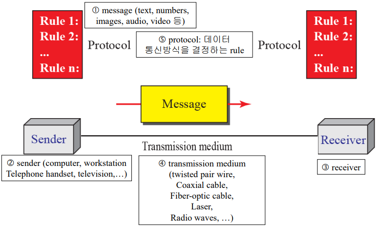
메시지(Message)¶
- 통신 대상인 전송되는 정보(데이터)
- 정보는 문자, 숫자, 소리, 그림, 영상 또는 이들의 조합
송신자(Sender)¶
- 메시지를 보내는 장치
- 예시
- 컴퓨터
- 핸드폰
수신자(Receiver)¶
- 메시지를 받는 장치
- 예시
- 컴퓨터
- 핸드폰
- TV
전송매체(Medium)¶
- 송신자에서 수신자까지 메시지를 전달하는 물리적인 경로
- 예시
- 꼬임쌍선(Twisted Pair Wire)
- 동축케이블(Coaxial Cable)
- 광케이블(Fiber-Optic Cable)
- 레이저
- 무선파
프로토콜(Protocol)¶
- 데이터 통신을 제어하는 규칙들의 집합
- 송/수신자는 반드시 동일한 프로토콜 사용
데이터 표현¶
-
문자(Text) : 비트 패턴, 0과 1로 된 비트들의 순차열로 표현
-
코드(Code) : 부호를 표현하기 위한 비트 패턴들의 집합
- 코딩(Coding) : 부호를 표현하는 과정
- ASCII : 현재 유니코드의 처음 127개의 문자에 해당, 기본 라틴(Basic Latin)
-
유니코드(Unicode) : 32 bit 사용. 전 세계 모든 문자 표현
-
숫자(Number) : 비트 패턴을 사용하여 표현
-
영상(Images) : 픽셀(Pixel), 해상도(Resolution)
-
흑백(1 또는 2 비트)
- RGB(Red, Green, Blue)
-
YCM(Yellow, Cyan, Magenta)
-
오디오(Audio) : 연속 신호(소리 or 음악)
-
비디오(Video) : 연속적인 개체 또는 여러 화상의 조합
전송 방식¶
- 연결된 두 장치 간 데이터를 전송할 때 신호가 전달되는 방향을 기준으로 구분
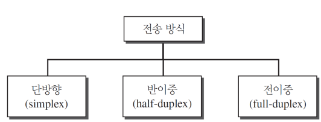
- 단방향 방식(Simplex Mode)
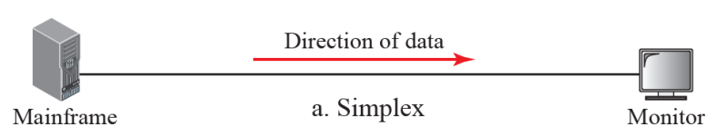
- 일방통행로처럼 한 방향으로만 통신 가능
- 두 장치 간 한쪽은 전송만 가능, 다른 쪽은 수신만 가능
-
ex) 자판은 입력만 모니터는 출력만 가능
-
반이중 방식(Half-Duplex Mode)
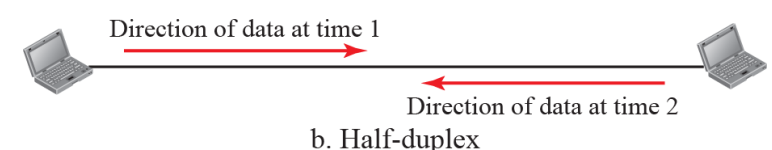
- 각 지국은 송신과 수신이 가능하지만 동시에는 불가능
- 장치가 송신할 경우 다른 장치는 수신만 가능
- 양방향으로 통행이 가능한 외길과 동일한 방식
-
ex) 워키토키와 생활 무전기(citizens band, 시민 밴드)
-
전이중 방식(Full-Duplex Mode)
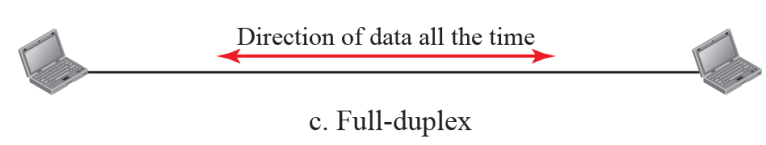
- 양쪽 지국이 동시에 송신과 수신 가능
- 양방향으로 통신이 가능한 2차선 도로와 같음
- 신호는 링크의 용량을 공유해서 양방향으로 전달
- ex) 전화
2절. 네트워크¶
네트워크(Network)¶
- 통신이 가능한 서로 연결된 장치의 모임, 망
- 호스트(Host, 종단 시스템(end system))
- ex) 대형 컴퓨터, 데스크탑, 노트북, 휴대폰, 보안 시스템
- 연결 장치
- 라우터(Router) : 서로 다른 네트워크를 연결하는 장치
- 교환기(Switch) : 장치를 서로 연결하는 장치
- 모뎀(Modem), 변복조기 : 데이터의 형태를 변환하는 장치
통신 채널(Channel)¶
- 장치를 연결하는 링크
- 장치들은 유선 또는 무선 통신 매체를 통해 연결
네트워크 평가기준(Network Criteria)¶
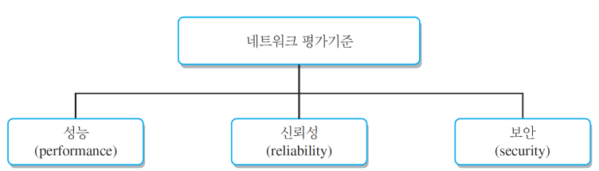
-
성능(Performance)
-
전달 시간, 응답 시간 등으로 측정
- 전달 시간(Transit Time) : 메시지가 한 장치에서 다른 장치로 이동하는 데 걸리는 시간
- 응답 시간(Response Time) : 요청과 응답에 걸리는 시간
- 네트워크 성능 결정 요인
- 사용자 수
- 전송 매체 유형(데이터 전송률)
- 연결된 하드웨어
- 소프트웨어의 효율성
-
처리율(Throughput, 처리량)과 지연(Delay)라는 두 가지 척도로 평가
-
신뢰성(Reliability)
-
고장 빈도 수
- 고장이 난 후 링크를 복구하는데 소요되는 시간
-
재난 발생 시 네트워크의 안전성 등에 의해 측정
-
보안(Security)
- 불법적인 접근으로부터 데이터 보호
- 손상으로부터 데이터 보호
- 개발, 정책 구현
- 침해, 데이터 손실로부터 복구 절차 등 포함
연결 유형¶
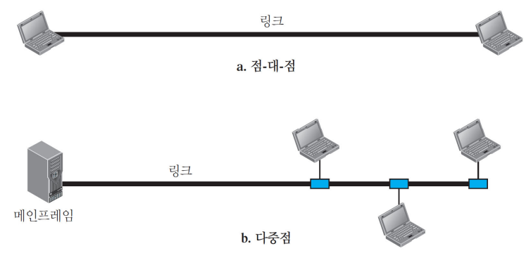
-
점-대-점 회선 구성(Point-to-Point Line Configuration)
-
두 장치 간 전용 링크 제공
- 채널의 전체 용량은 두 장치 간 전송을 위해서만 제공
- 양쪽 끝에 연결된 케이블이나 전선 사용
-
ex) 텔레비전 제어 시스템, 리모컨 간 연결
-
다중점(Mutipoint, 멀티드랍(Multidrop))
- 3개 이상의 특정 기기가 하나의 링크를 공유하는 방식
- 채널의 용량을 공간적 / 시간적으로 공유
토폴로지(Physical Topology)¶
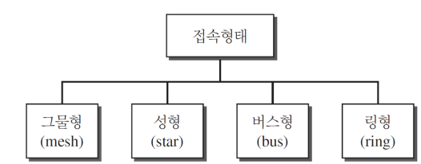
- 물리적인 구조, 접속형태
- 네트워크에서 컴퓨터의 위치나 컴퓨터의 케이블 연결 등의 물리적인 혹은 논리적인 배치 방식
그물형(Mesh) 접속 형태¶
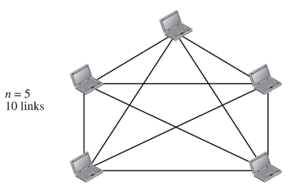
- 모든 장치는 다른 장치와 점-대-점 링크
- n개의 장치를 서로 연결하기 위해 n(n - 1) / 2개의 채널이 요구
-
(n - 1)개의 입출력(I / O) 포트
-
장점
-
전용 링크의 사용으로 원하는 자료의 전송을 보장
- 안정성이 높음
-
프라이버시와 보안
-
단점
- 설치와 재구성에 어려움
- 큰 설치 공간 및 높은 비용 필요
성형(Star) 접속 형태¶
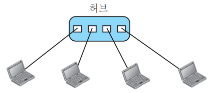
- 허브(Hub)라는 중앙제어장치(Central Controller)와 전용 점-대-점 링크 구성
- 각 장치 간 직접적인 통신 불가
- 모든 전송은 제어 장치를 통한 전송
-
각 장치와 연결을 위해 1개의 링크와 1개의 입출력(I / O) 포트 필요
-
장점
-
한 링크의 문제가 다른 링크에 영향을 주지 않음
-
설치와 재구성에 용이
-
단점
- 허브가 고장날 경우 전체 시스템 고장
- 링형, 버스형보다 많은 케이블 연결 필요
버스(Bus) 접속 형태¶
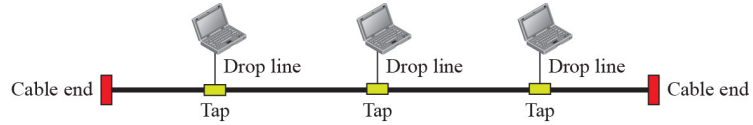
- 다중점 형태
- 하나의 긴 테이블이 모든 장치를 연결하는 백본 또는 중추 네트워크 역할
-
탭(Tap)과 유도선(Drop Line)에 의해 버스에 연결
-
장점
-
쉬운 설치
-
가장 적은 양의 케이블 사용
-
단점
- 재구성이나 결함 분리의 어려움
- 중추 케이블 결함 시 다수의 장치에 영향
링(Ring) 접속 형태¶
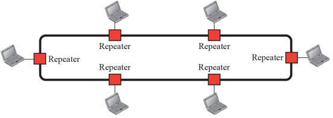
- 자신 양쪽 장치와 전용 점-대-점(Point to Point) 연결
-
각 장치는 중계기(repeater) 포함
-
장점
-
쉬운 설치와 재구성
-
신호의 항상 순환으로 만약 한 장치가 특정한 시간 내에 신호를 못받을 경우 경보 발생
-
단점
- 단방향 전송
- 링의 결함은 전체 네트워크 마비
- 이중 링 또는 결함이 있는 지점을 단절시킬 수 있는 교환기를 사용하여 해결해야 함
혼합형(Hybrid) 접속 형태¶
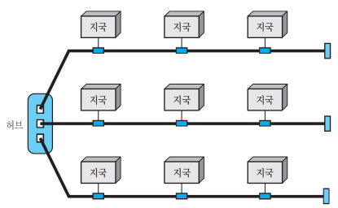
다수의 접속 형태인 경우 여러 개의 topology를 혼합해 사용 버스(Bus)형 + 성(Star)형
3절. 네트워크 유형¶
네트워크 종류 유형¶
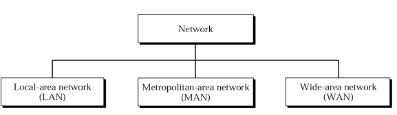
근거리 통신망(LAN)¶
- Local Area Network
- 개인 소유, 단일 사무실, 건물, 학교 등에 있는 호스트들을 연결
LAN 연결 방식¶
- 공유 케이블 LAN(과거)
- 교환기 LAN(현재)